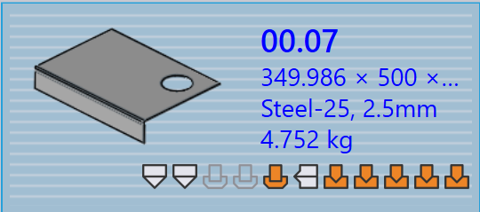

Delpanel
Dette afsnit forklarer del-relaterede handlinger såsom Genimportér…, Ny klargøring…, Omdøb…, Eksportér udgange osv., der bruges til at administrere delinstanser.

|
|


Genimportér…
-
Højreklik på en del og klik på Genimportér….

-
Alle valgte del-værktøjsinstanser på tværs af alle maskiner ryddes, inklusive auto-værktøjede og manuelt værktøjede instanser.
-
Eksisterende outputfiler (CAD, Bend og Cut) fjernes.
-
Dele genimporteres, og frisk CAD-validering og værktøj anvendes for alle maskiner.
-
Nye outputfiler oprettes baseret på det opdaterede værktøjsresultat.
Ny klargøring…
-
Højreklik på en del og klik på Ny klargøring….

-
Alle maskiner er markeret som standard og grupperet som Laser, Punch, Panel og Pressebremse.
-
Klik på OK for at fortsætte. Dette fjerner både auto-værktøjede og manuelt værktøjede instanser for de valgte maskiner og sletter relaterede outputfiler.
-
Når Bibehold eksisterende udgange afkrydsningsboks er valgt, vil kun dele, hvis outputs blev fjernet tidligere, blive genværktøjet, andre outputs forbliver uberørte. Hvis ikke markeret, fjernes alle outputfiler for valgte maskiner og regenereres under genværktøjning.
|
Omdøb…
Dette afsnit forklarer, hvordan De omdøber en eller flere dele i TruSmartCAM.
-
Højreklik på delen og klik på Omdøb….

-
En omdøbningsbekræftelsesdialog vises med det aktuelle delnavn.
-
Indtast det nye navn og klik på fluebenet ✓ ikonet for at bekræfte, eller klik på krydset ✗ ikonet for at annullere omdøbningsoperationen.

-
For at omdøbe flere dele skal De vælge alle nødvendige dele, derefter højreklikke på en af dem og klikke på Omdøb….
-
En bekræftelsesdialog vises med det samlede antal valgte dele.
-
For hver del skal De indtaste det nye navn og klikke på fluebenet ✓ ikonet for at bekræfte én efter én.
-
Hvis en del blev valgt ved en fejl, skal De klikke på krydset ✗ ikonet for at annullere. Alternativt kan De højreklikke på delen og klikke på Annullér omdøbning for at springe omdøbning over.
Eksportér udgange
Denne indstilling eksporterer deludgangen til den destination, der er konfigureret i Fabriksindstillinger. (Se Bend Settings og Cut Settings)
Outputplaceringen er defineret separat for Bend, Fold og Cut i deres respektive outputindstillinger. Alle værktøjer, der er knyttet til bend, fold og cut operationer, eksporteres for hele delen.

Som vist nedenfor gemmes de eksporterede filer i den angivne mappe
(for eksempel C:\PraxData\Out\Reports).

| De eksporterede filer afhænger af operationstypen. For Bend og Fold operationer genereres NC-filer og rapporter. For Cut og Punch operationer eksporteres kun delfilerne. |
Del tildel materiale
Dele med status Materiale ikke tildelt skal opdateres før videre behandling. Trinene nedenfor forklarer, hvordan De tildeler materiale.
-
Højreklik på delen, der viser status Materiale ikke tildelt og vælg Tildel materiale.

-
Tildel materiale vinduet åbner.

-
Dialogen har fire sektioner:
-
Forslag - Foreslår automatisk råmaterialer baseret på den importerede dels tykkelse.
-
Alle materialer - Viser alle materialetyper defineret i TruSmartCAM.
-
Alle råmaterialer - Viser alle råmaterialer tilgængelige i systemet.
-
Brugte råmaterialer - Viser de senest anvendte råmaterialer til hurtig adgang.
-
-
De kan bruge Søg… (Ctrl+F) feltet øverst til hurtigt at finde materialer. For eksempel skal De indtaste "steel" for at vise alle matchende materialer på tværs af de tre sektioner.
-
Fra den filtrerede liste skal De vælge det nødvendige materiale (f.eks. Steel-25) fra råmaterialelisten.
-
Det valgte materiale vil blive tildelt delen.
Valseretning
Valseretning refererer til orienteringen af kornet i en del, hvilket kan påvirke, hvordan delen skæres og behandles. Denne indstilling giver Dem mulighed for at angive Valseretning for en del i delebiblioteket. Baseret på den valgte retning vil delen blive placeret i den korrekte orientering til skæring på de tilgængelige maskiner.
-
Højreklik på en delflise i delebiblioteket eller jobvinduet.
-
Vælg den foretrukne rulleretning:
-
Ingen
-
Vandret
-
Lodret

-
-
Delen genværktøjes automatisk for alle tilgængelige skæremaskiner baseret på den valgte rulleretning.
-
Delflisen vil vise den valgte rulleretning som vist nedenfor:

